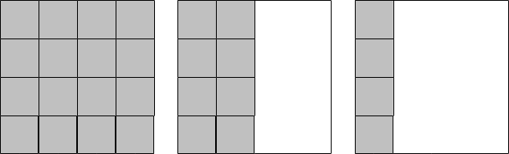

Efficiency and Runtime
It is sometimes useful to measure and predict the time a computer takes to execute an algorithm. This can help us to compare several solutions to a problem and pick the fastest one, for example.
TipDefinition
Runtime is the time that a computer takes to execute an algorithm.
Most of the algorithms that we have previously considered execute all of their statements once. As a result, they would not take long to be executed by a typical computer (i.e., their runtime would be low). However, algorithms that require repetition have a longer runtime. Consider the find all prime numbers algorithm. If it was adjusted to find all the prime numbers below 100, it would take considerably longer than if it was set to find all the prime numbers below 10. It would take even longer to find all the prime numbers below 1,000. This is because the check if prime process is evaluated for every prime number candidate, and each time it is evaluated the runtime increases.
It is typically desired to design algorithms that have as short of a runtime as possible. Sometimes this calls for designing more intricate or complicated ones; however, only as long as we are sure that the complicated algorithm will have a shorter runtime than the basic algorithm.
Let’s take a look at an interesting problem that will help to show the differences between an algorithm that works and an algorithm that works and is efficient. Consider a square room and an unlimited number of identical square tiles. Can an algorithm be designed to calculate the number of tiles required to cover the entire floor of the room?
There are several ways that this algorithm can be designed.
One approach is to lay down tiles in the entire room and then count them.
Another approach may be to lay down tiles in half of the room, count the number of tiles used, and then double that number.
A third approach may be to lay tiles along one edge of the floor, and multiply the number of tiles laid by itself (i.e., squaring it to find the area of the floor).
The following figure shows the three methods, side-by-side.

Which solution do you think is the best? What does best mean? Does it mean that the algorithm takes less time? Does it mean that it requires fewer tiles? Does it mean that it requires fewer calculations (and is perhaps less prone to arithmetic errors)? Is there a solution that does not require laying down any tiles at all?
Having multiple solutions (or algorithms) to the same problem is a frequent scenario in computer science. We have mentioned before that best is a very subjective measure for an algorithm. However, there is still a need to compare algorithms and determine which algorithm is better. One of the ways of quantitatively (i.e., numerically) comparing is by using the algorithm’s runtime. Let’s take a closer look at some algorithms that solve the tile laying problem. For simplicity, we will assume that both the room and tiles are square in shape (i.e., the number of tiles required to cover adjacent edges is equal). Note that the algorithm steps are numbered, with sub-steps placed within a single algorithm.
Algorithm 1 (this one covers the entire floor with tiles):
1. set number of tiles currently laid to 0
2. repeat the following steps until the entire floor is covered
2.1. lay a tile on the floor
2.2. add one to the number of tiles currently laid
3. the number of tiles currently laid is the number of tiles neededAlgorithm 2 (this one covers half of the floor with tiles):
1. set number of tiles currently laid to 0
2. repeat the following steps until half of the floor is covered
2.1. lay a tile on the floor
2.2. add one to the number of tiles currently laid
3. multiply the number of tiles currently laid by 2
4. the result is the number of tiles neededAlgorithm 3 (this one covers the length of one wall with tiles):
1. set number of tiles currently laid to 0
2. repeat the following steps until one row has been laid
2.1. lay a tile on the floor
2.2. add one to the number of tiles currently laid
3. multiply the number of tiles currently laid by itself
4. the result is the number of tiles neededWe are now going to figure out which algorithm is better between Algorithm 1 and Algorithm 3 using their runtime. Suppose that the room is 12ft x 12ft and each tile is 1ft x 1ft. Also assume that it takes 10 seconds to lay each tile. How long will Algorithm 1 take to be completely executed? Since Algorithm 1 calls for tiles to be laid across the entire room, the 12ft x 12ft room would then require 144 tiles. Since it takes 10 seconds to lay each tile, it would then take 1,440 seconds to cover the entire room. This is 24 minutes:
\[ 1,440 sec \times \frac{1 min}{60 sec} = 24 min\]
NoteDid you know
Dimensional analysis is a nice way to work through problems with different units (like minutes and seconds), and that require conversion across them. The basic idea is that values can be multiplied by conversion (or dimensional) units that are expressed as fractions. Those units can be canceled out if they appear in both the numerator and denominator. The example above can be rewritten as follows:
\[ \frac{1,440 sec}{1} \times \frac{1 min}{60 sec} = 24 min\]
The sec units in the numerator of the first fraction and the denominator of the second fraction cancel each other out, thereby leaving min as the final unit. Here’s another example that converts days to seconds:
\[ \frac{1 day}{1} \times \frac{24 hr}{1 day} \times \frac{60 min}{1 hr} \times \frac{60 sec}{1 min} = 86,400 sec\]
The day, hr, and min units in the numerator and denominator of the fractions cancel each other out. The only unit left is sec which, once the numerators and denominators are multiplied, represent the number of seconds in one day.
What about Algorithm 3? This algorithm only calls for laying down tiles along one edge of the room to make one row. This means that only 12 tiles will be laid down using this algorithm, a process that would take 120 sec (2 min). But Algorithm 3 also requires a calculation. Let’s assume that this calculation takes 60 sec. The total runtime for Algorithm 3 is then 120 sec + 60 sec = 180 sec (3 min).
So Algorithm 3 is 21 minutes faster than Algorithm 1 for a 12ft x 12ft room. But what happens if the size of the room is changed? What is the performance of both algorithms if they were used to tile a room that is 20ft x 20ft, under the same timing assumptions as before?
We find that Algorithm 1 takes approximately 1 hr 7 min:
\[ \frac{400 tiles}{1} \times \frac{10 sec}{1 tile} = 4,000 sec \] \[ \frac{400 sec}{1} \times \frac{1 sec}{60 sec} \times \frac{1 hr}{60 min} = 1.11 hr \] \[ \frac{0.11 hr}{1} \times \frac{60 min}{1 hr} = 6.6 min \] \[ \frac{0.6 min}{1} \times \frac{60 sec}{1 min} = 36 sec \]
Let’s explain the calculations above.
The first calculates the number of seconds required for Algorithm 1: 4,000 sec.
To represent this in hr, min, and sec, we simply need to convert 4,000 sec to hr (the second calculation): 1.11 hr.
The third calculation takes the fractional portion of this (0.11 hr) and converts it to min: 6.6 min.
The final calculation takes the fractional portion of this (0.6 min) and converts it to sec: 36 sec. The total time is then 1 hr 6 min 36 sec, or approximately 1 hr 7 min.
Algorithm 3 only takes approximately 4.5 minutes:
\[ \frac{20 tiles}{1} \times \frac{10 sec}{1 tile} = 200 sec + 60 sec = 260 sec\] \[\frac{260 sec}{1} \times \frac{1 min}{60 sec} = 4.33 min\] \[\frac{0.33 min}{1} * \frac{60 sec}{1 min} = 19.8 sec\]
Again,
The first calculation gives us the time it takes to lay tiles across a single wall, and then do the 60 sec calculation: 260 sec.
The second calculation converts sec to min.
The final calculation takes the fractional portion of this (0.33 min) and converts it to sec: 19.8 sec.
The total time is then 4 min 19.8 sec, or approximately 4.5 min.
This means Algorithm 3 is over 15 times faster than Algorithm 1 for a 20ft x 20ft room: \[ \frac{4,000 sec}{260 sec} = 15.38\]
Does that mean that Algorithm 3 will always be faster and therefore better than Algorithm 1?
ImportantActivity
Try calculating and comparing how long it will take for either algorithm to cover a very small room that is 2ft x 2ft.
What about if the room was 3ft x 3ft? In this case, we find that both algorithms take the same amount of time. The calculation for Algorithm 1:
\[ \frac{9 tiles}{1} \times \frac{10 sec}{1 tile} = 90 sec\]
The calculation for Algorithm 3:
\[ \frac{3 tiles}{1} \times \frac{10 sec}{1 tile} = 30 sec + 60 sec = 90 sec\]
The question of which algorithm is better depends on the size of the room to be tiled. Figure 1 compares the runtime of the two algorithms on differently sized rooms. It is a plot in which the horizontal axis represents the length of one wall of the room (in feet), and the vertical axis represents the amount of time that is required to tile the room (in seconds). The figure illustrates that for rooms less than 3ft x 3ft, Algorithm 1 is faster. In the case where the room is exactly 3 ft x 3 ft both algorithms require the same amount of time. For rooms greater than 3ft x 3ft, Algorithm 3 is faster.